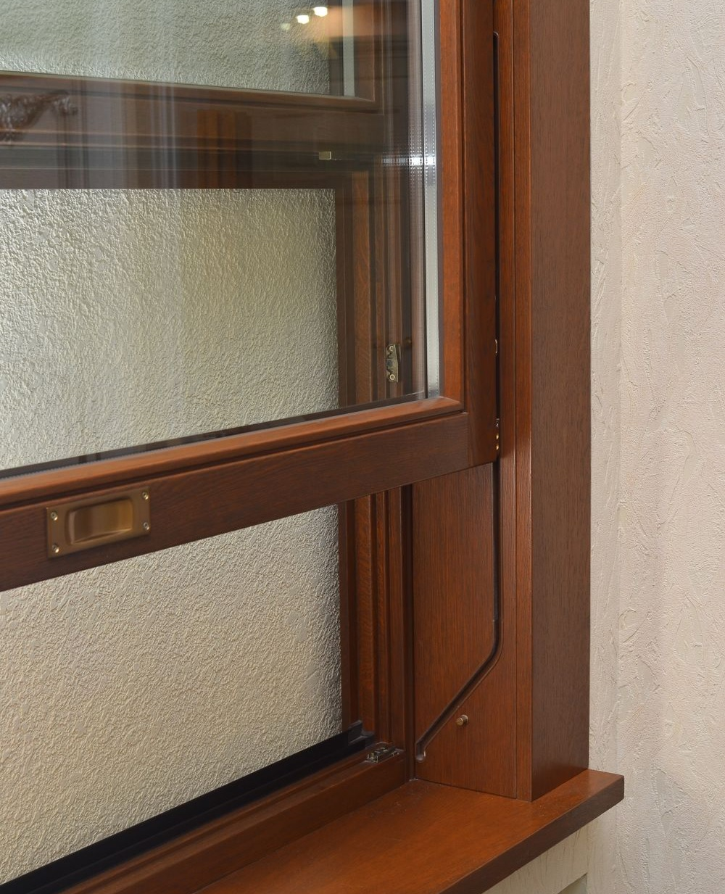
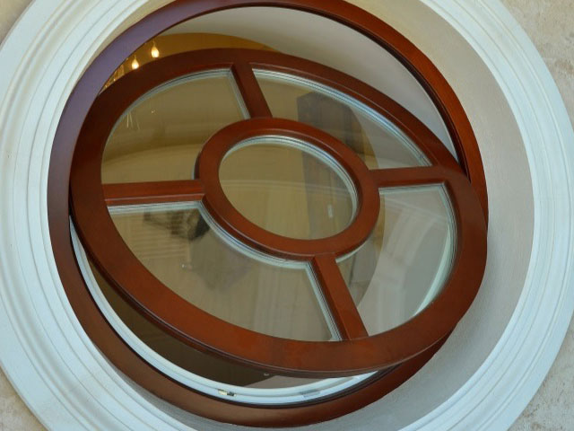
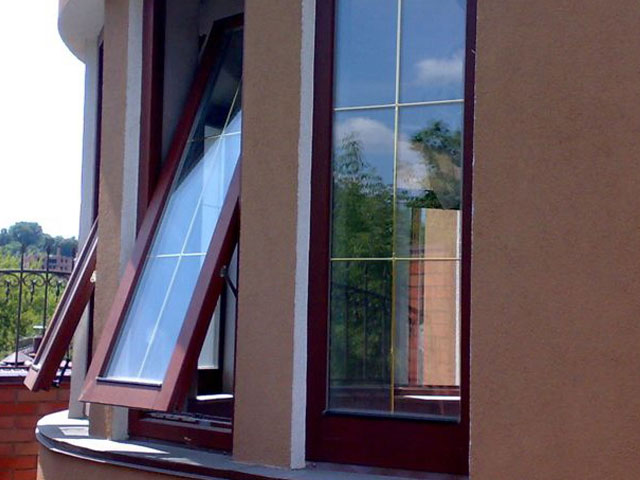
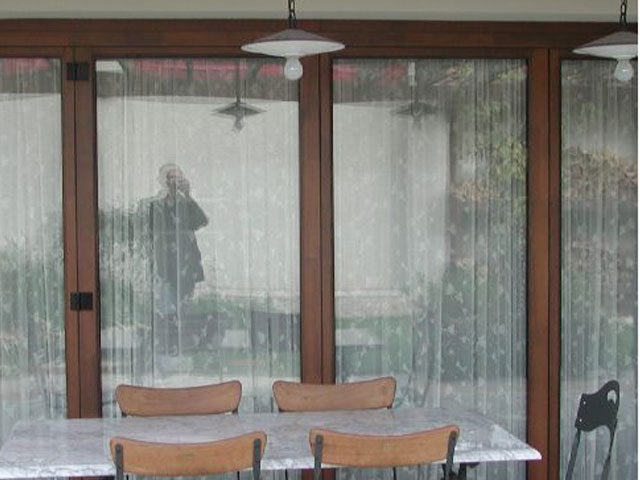
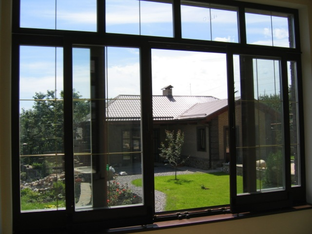
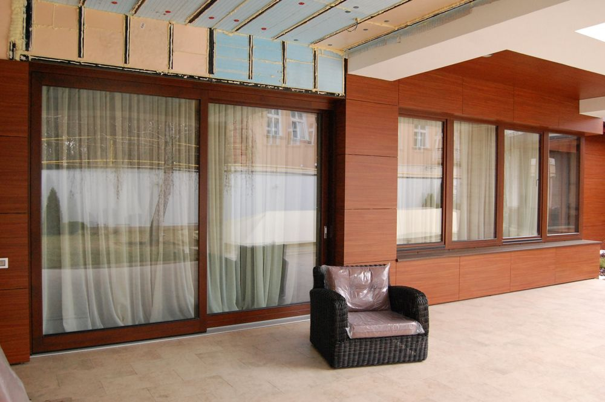

Подъемное "английское" окно

"Английское окно" всегда находится в обрамлении внутренних деревянных откосов и наличников
Деревянные окна на вертикальной и горизонтальной оси вращения

Возможности фурнитуры позволяют нам производить круглые окна с размерами в диаметре от 450мм до 2000мм и весом створки до 100 кг
Панорамные створки без переплетов

Мы предлагаем своим клиентам горизонтально-поворотные окна с максимальным размером 2 на 2,5 метра и весом створки до 300 кг
Складывающиеся наружные конструкции (гармошка)

Возможность максимального открытия пространства. Габаритный максимальный размер: высота-2,5 м, ширина - до 6 м
Раздвижные наружные конструкции Patio

Максимальный размер – 2,5*2,5м с одной подвижной створкой, а в варианте с двумя подвижными створками - 2,5*4м
Раздвижные портальные системы

Идеальное решение для создания панорамных стен больших размеров